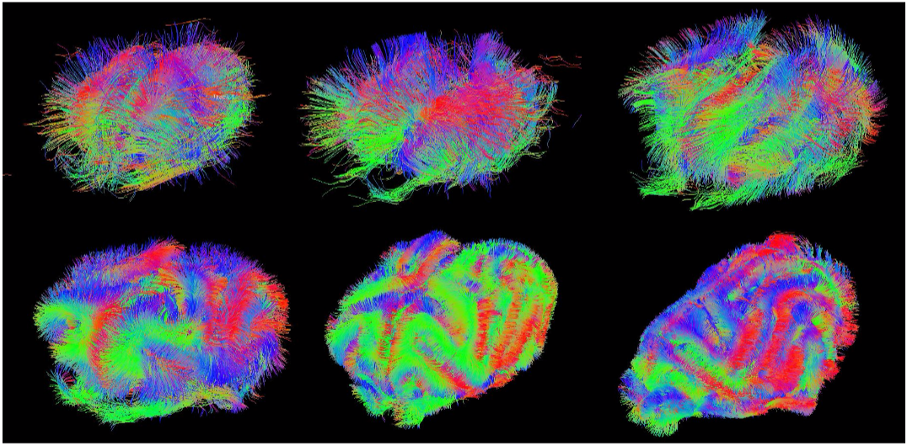
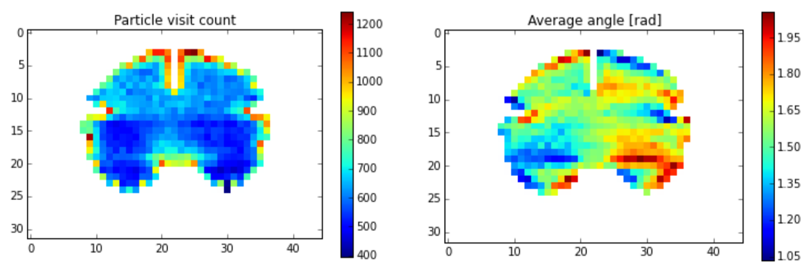
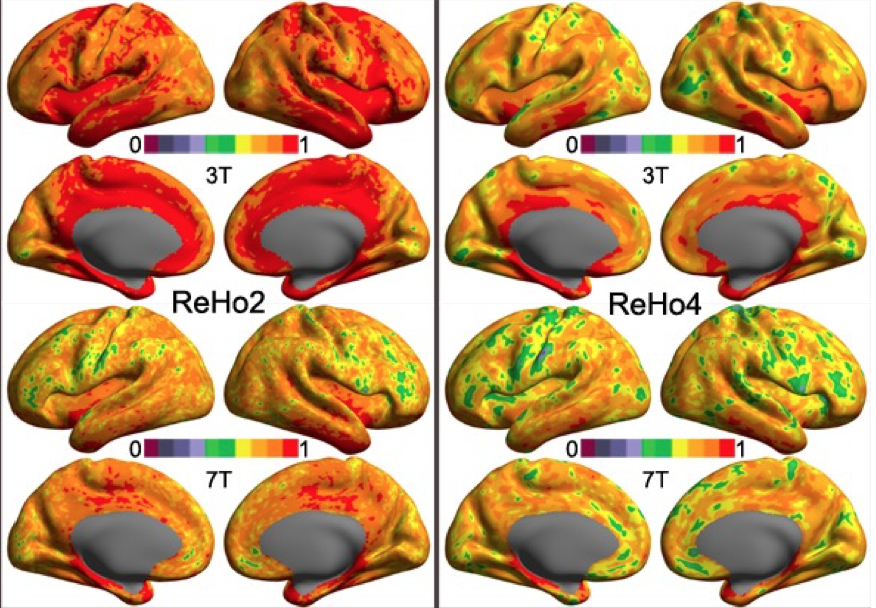

The following projects have been proposed by attendees of Brainhack 2016. If you are interested in collaborating on a project please email the listed contacts. If you would like to have your project featured, please email info@brainhack.org
Contact: Asier Erramuzpe Aliaga.
Much of the modern studies of the human brain use Magnetic Resonance Imaging (MRI) to look which parts of the brain are responsible for different behaviours (such as moving one’s finger) and experiences (such as fear). Scientists traditionally have reported such findings in a print form of an academic journal, which generally lacks the availability of machinereadable information. This is why NeuroVault.org was created. It is a website for sharing and visualising threedimensional maps of the human brain that makes it very easy for researchers to upload and annotate their data. It provides visualisation and decoding services that can help researchers interpret their data. Most importantly all of the data deposited in NeuroVault.org is publicly available for everyone and can be used to further our understanding of the human brain.
This summer, I have been working in improving the feature to find similar brain maps from the Neurovault database. I’ve managed to set up a new Engine from the scratch and improving significantly the performance.
For BrainHack, I would like to add functionality to Neurovault that enables users to download all statistical maps from a collection at once, preferrably via streaming, as a .zip archive that is created on the fly. Also, it could be improved by extending a “selection” tool allowing the selection of specific maps that would be downloaded, depending on the available time.
In addition to this, I would like to learn about “The ultimate statistical map visualization” described here.
Contact: Céline Delettre.
In the context of a project analysing the role of mechanical processes on the development of neocortical organisation in the ferret (Roberto Toro's project from the Institut Pasteur in Paris), diffusion weighted data have been acquired with high angular resolution (200 directions). We will use these data to build precise reconstructions of the developing brain connectivity. Our aim is to investigate the changes of connectivity during development using connectivity matrices. This is made difficult by the lack of a standard atlas for the ferret brain. We could then elaborate a first parcellation based on the homogeneity of the connectivity as has been done in human diffusion imaging.
I first used ExploreDTI in order to do the tractography of the ferrets at different ages. After a first BrainHack I noticed that my data were facing some unfortunate and uncontrolled modifications. I am now translating the tractography process into Python using Dipy in collaboration with Eleftherios Garyfallidis. This will give us a better control over the parameters of the pipeline as well as the possibility to run our analyses on a cluster. Dipy also allows us some easy filtering and clustering of the computed streamlines. All the Dipy scripts for the tractography and analyses are available on GitHub. https://github.com/celinede/scripts4DWI_dipy_brainhack.
 Figure 1. Evolution of the ferret brain tractography with age (postnatal days: 2, 4, 8, 16, 32, 64)Contact: Hao-Ting Wang.
A self-organizing map (SOM) is an artificial neural network using unsupervised training to visualize high-dimensional data onto a lower dimensional map. It’s map-like hidden layer includes several nodes, and each node has a weighted vector of the same size of the input space. The input data is mapped to the most similar node, called the best matching unit (BMU), according to their features. When the training is completed, the BMUs with similar features will be close to each other. A trained SOM is visualized by the unified distance matrix, or U-matrix, which represents the Euclidean distance between the node neighborhood on a 2-D map.
There are a few reasons that I would like to apply SOM on neuroimaging and neuropsychological data. The input space is capable of including multiple features and the map is multi-dimensional. Neuroimaging and behavioral data can potentially be fed to the map simultaneously in map training. SOM is capable of handling large datasets, therefore it can be applied to low level raw data or group level data The result is easy to visualize and interpret. A trained map is not computationally heavy to conduct further analysis on, such as retraining the map, clustering and multi-map comparison.
The datasets I will be using in this project are the resting state and mind wandering data collected at University of York, under the direction of Dr. Jonny Smallwood and Prof. Beth Jefferies. The first dataset includes 157 participants with both resting state fMRI and offline Multi-Dimensional Experience Sampling (MDES) reports. The second dataset is a small subset of the participants from the former set doing online MDES in the scanner.
The two datasets are both dedicated to examine the underlying neural mechanism of mind-wandering in Default Mode Network (DMN), and I would love to continue investigating this question. In a recent BrainHack project in Paris, collaborating with Prof. Dr. Dr. Danilo Bzdok, we conducted a sparse canonical correlation analysis (SCCA) to approach this question. We successfully identified the latent components that collectively related neural activity in DMN with spontaneous thought contents.
For this project, I am using a python based library: SOMPY. I would love to see if the previously found pattern of thoughts and connectivity patterns in DMN can be identified in the second dataset with online MDES. I will train a number of maps to learn the latent components found by SCCA and map the second dataset with online MDES onto those, to see if the latent components emerge in the online task fMRI. Furthermore, I would love to continue explore the general application of SOM on fMRI data or online training in the future.
Contact: John Capozzo.
Studies of fMRI in cognitive psychology have generally focused on maximizing sensitivity to group level effects and in testing hypotheses about specific brain regions or mechanisms assumed to be common across subjects. However, increasing concern has risen regarding questions of reproducibility and reliability across these studies. Some authors have suggested that studies instead focused on individual differences can potentially address limitations of group level analysis. Examples of group level analysis utilized in connectomics include Independent Component Analysis to identify spatio-temporal or multi-modal patterns of connectivity, task-based activation studies, and identification of global and local connectivity metrics across a sample. A number of preprocessing steps are used to eliminate unwanted or confounding sources of variance in an attempt to maximize sensitivity to common cognitive mechanisms and minimize the impact of individual differences. Despite agreement regarding the necessity of such preprocessing steps, there is both a lack of consistency of standard preprocessing pipelines and uncertainty as to the impact of this reality on results across studies. Challenges and inconsistencies in the storage, sharing, analysis, and adequate implementation of data and coding steps of an experiment also contribute uncertainty. Further, end-users may have intimate knowledge of their own preprocessing and analysis steps, but are less familiar with other options available in software packages or utilized by other labs. Certainly, in moving towards understanding differences between individuals and working towards a personalized approach to medicine, such challenges will need to be overcome. Data-driven approaches leveraging data from multiple biological domains within an individual are a plausible alternative to group level studies and should be evaluated for their potential in defining common profiles of brain state, structure, and function. Revisiting our understanding of what constitutes signal and noise at the individual level, particularly in light of concerns with the reliability and reproducibility of group level statistics, is a first step in ev aluating alternative methods focused on individual differences.
Nipype (alongside other packages from the Nipy community) is software aimed at facilitating standardization and sharing within the neuroscience community with respect to preprocessing and analysis pipelines. Multivariate Distance -Based Matrix Regression (MDMR) is a bioinformatics method recently applied to mining large scale neuroimaging datasets. MDMR associates pair-wise distances between individuals’ connectivity profiles with individual and/or group differences in behavioral or phenotypic measure at sc ales down to the voxel level. MDMR can also be extended to structural connectivity, as well as in exploration of measures of node-specific, within-network, between-network, and global connectivity. The efficiency of the MDMR algorithm renders analyses that were previously computationally infeasible, now computationally tractable. A number of MDMR implementations are available. In addition, I have worked on our lab’s own implementation in MATLAB and Python over the past year and a half.
My proposal is to apply MDMR (either an existing or modified implementation) to the BrainHack structural and functional datasets leveraging Nipype to evaluate the space of possible pipelines and parameters in characterizing how group level and between subject results are impacted by preprocessing and analysis decisions. Nipype can be used to create an extendable interface with existing MDMR packages for neuroimaging inputs. Possible permutations include adjusting standard preprocessing decisions (selection of gray matter voxels, standard vs. individual space, ROI definition/selection, mean signal regression), varying study scope (global vs. within- network vs. between-network), evaluating various global and local connectivity measures at different connectivity thresholds, controlling for various characteristics of the sample, and modifying the regression-like framework of MDMR to incorporate hierarchical or factor analyses approaches. Milestones to be reached in the time leading up to the hackathon would include evaluation of available MDMR implementat ions, a working in terface for functional and structural data inputs to MDMR (possibly leveraging existing resources such as the Brain Connectivity Toolbox), a set of analysis steps and parameters of interest to evaluate, and evaluation of project scope with respect to available computing resources, compute time, preprocessing steps that should be c ompleted ahead of time, and targeted sample size. Completion of these milestones and exhaustive evaluation of the parameter space would be best achieved in a collaborative fashion both through the Brainhack Slack channel and though cooperative effort at the hackathon itself.
In light of the growing interest in individual differences, this project would further evaluate the ability of the MDMR method as a data-driven approach to understanding individual differences in structural and functional connectivity. Eventual outputs include completion of a standard individual differences analysis pipeline, as well as a neuroscience specific MDMR package developed in the spirit of reproducibility, data sharing, and an Open Science approach to neuroscience research. Perhaps ultimately, these efforts might result in a n open-source Python package that could be used to address significant challenges and concerns currently facing the field , while building on, drawing attention to, and solving said challenges in moving towards a science of individual differences.
Contact: Jingyuan Chen.
Intra/Inter-subject variability of resting state (RS) functional connectivity can be caused by non-neurally-related sources (e.g., scanner or physiological noise) as well as neurally-related mechanisms – variations of subject’s cognitive states. Such dynamic changes of the brain state repertoire can be intrinsic to RS, but can also be triggered by ongoing deviations from RS, e.g., subjects involving in an active thinking instead of relaxing and being awake. Delineating when the subject is in resting state (IRS, abiding to instructions and remaining in a relaxed, non-sleeping state) and out of resting state (ORS, involved in mental activity other than RS) is potentially important for assessing the reliability of RS studies, since (1) test-retest reproducibility of IRS results is practically more meaningful than that of combined RS (CRS, a mixture of IRS and ORS); (2) the ratio between the durations of IRS and ORS can guide how we weigh each individual’s results towards a more reliable group-level inference. Despite a lack of ground truth, a vague delineation of IRS/ORS is not impossible, given that several groups have identified and reported dictionaries of IRS state patterns [1-3] (i.e., patterns that are derived from a large population and widely shared by participates in RS scans). In this proposed work, we will explore approaches to identify IRS/ORS of a single subject’s RS scan based on published RS dictionaries, and compare intra/inter-subject variability of IRS/ORS/CRS brain functional connectivity.
Data: we will use the MPG datasets from CoRR, which includes two RS [4] sessions as well as several psychometrics (e.g., mood, sustained attention).
IRS/ORS classification: we will use temporal functional modes reported in [1] or whole-brain co-activation patterns reported in [2] as the dictionary states in RS, then for each scan: (1) Every time frame is classified to one of the dictionary states based on a given distance measure (e.g., correlation, Euclidean distance); (2) The silhouette value (a measure of how similar a time frame is to time frames within the same state compared to in other states) of each time frame will be computed; (3) Null distributions of each time frame’s silhouette values will be generated via simulations. In each simulation trial, sham state labels will be generated (by assigning each time frame to a random dictionary state) and the silhouette value of each time frame will be calculated accordingly. 1000 trials will be performed. (4) Time frames with significant silhouette values (under a given confidence level, a = 0.05) will be identified as ‘IRS’, and ‘ORS’ elsewise.
Relating IRS/ORS results to psychometrics: Ratios of durations of IRS/ORS and alternating frequencies between IRS/ORS will be regressed against combinations of psychometric measures to examine whether IRS/ORS relates to self-reported changes of cognitive states. Intra/Inter-subject variability of IRS/ORS/CRS functional connectivity: We plan to focus on direct Pearson correlations between pairs of functional ROIs (parcellated using online atlas), and compare the intra/inter-subject variability using IRS/ORS/CRS time frames, respectively.
Hypothesized outputs: If the proposed approach could effectively offer a vague delineation of IRS/ORS, we would expect to see (1) correlations between metrics summarized from IRS/ORS and (combinations of) certain psychometric measures; (2) compared to CRS, both intra/inter-subject variability are reduced using IRS while increased using ORS.
References: [1] Smith et al., Temporally-independent functional modes of spontaneous brain activity. PNAS, 109(8):3131-6, 2012; [2] Liu et al., Decomposition of spontaneous brain activity into distinct fMRI co-activation patterns. Frontiers in systems neuroscience, 2013, 7:11; [3] Allen et al., Tracking whole-brain connectivity dynamics in the resting state. 2014. 24(3): 663-76; [4] Gorgolewski et al., A high resolution 7-Tesla resting-state fMRI test-retest dataset with cognitive and physiological measures, Scientific Data, 2015, 2:140054Contact: David Moreau.
Recent contributions in the neuroscientific literature have raised concerns about the validity and the predictive power of numerous findings [1]. This process is part of a larger process in neuroscience and psychology, intended to improve research practices and thus the quality of research outputs [2-4]. An important point that has been made relates to the current emphasis on statistical models that adequately explain a set of data, sometimes at the detriment of predictive power [5]. The model that most accurately describes a set of data is not always the one that most adequately forecasts future findings. Here, I propose to simulate the influence of stochastic processes on imaging findings, via Monte Carlo sampling methods based on data available from the Human Connectome Project (HCP).
Monte Carlo methods refer to the use of computational algorithms to simulate repeated random sampling, in order to obtain numerical estimates of a process. The idea that we can refine knowledge by simulating stochastic processes repeatedly rather than via more traditional procedures (e.g. direct integration) might be counterintuitive, yet such simulations are particularly useful in modeling complex problems where a number of variables are unknown or difficult to assess. Monte Carlo simulation methods can then provide estimates for values a statistic can take when constrained by initial parameters, or a range of parameters, making this set of techniques particularly suitable to problems in neuroscience.
I propose to assess the impact of randomness on imaging findings via the following steps:
These steps can be implemented easily in R [6], with additional packages. The project as outlined above is by no means final—I do hope that discussions and exchanges with fellow attendees can improve upon or refine the analysis.
References: [1] Eklund, A., Nichols, T. E., and Knutsson, H. (2016). Cluster failure: Why fMRI inferences for spatial extent have inflated false-positive rates. Proceedings of the National Academy of Sciences, 113(28), 7900–7905. doi:10.1073/pnas.1602413113; [2] Dreber, A., Pfeiffer, T., Almenberg, J., Isaksson, S., Wilson, B., Chen, Y., … Johannesson, M. (2015). Using prediction markets to estimate the reproducibility of scientific research. Proceedings of the National Academy of Sciences, 1516179112–. doi:10.1073/pnas.1516179112; [3] Ioannidis, J. P. A. (2012). Why Science Is Not Necessarily Self-Correcting. Perspectives on Psychological Science, 7(6), 645–654. doi:10.1177/1745691612464056; [4] Simmons, J. P., Nelson, L. D., and Simonsohn, U. (2011). False-positive psychology: undisclosed flexibility in data collection and analysis allows presenting anything as significant. Psychological Science, 22(11), 1359–66. doi:10.1177/0956797611417632; [5] Shmueli, G. (2010). To Explain or to Predict? Statistical Science, 25(3), 289–310.; [6] R Core Team. (2014). R: A language and environment for statistical computing. Vienna, Austria: R Foundation for Statistical Computing.Contact: Anastasia Osoianu or Charl Linssen.
Polarized light imaging (PLI) as well as the tractography of high angular resolution diffusion weighted imaging (DWI) data reveal a geometry of striking regularity. This makes the neuroanatomist wonder whether it would be possible to generate a connectome based exclusively on a small set of hypotheses:
more than 90% of white matter connections are corticocortical;
the density of fibres is homogeneous throughout the white matter;
fibres are oriented perpendicular to gyral crowns and parallel to sulcal fundi;
fibres are sticky, which makes them aggregate in bundles of similar orientation.
How much of a real brain connectome would be recovered by such a simple and reductionistic model?
We propose to approach this question in the simple case of a 2D coronal slice. We will propagate random particles constrained by the above assumptions and calculate a direction map from the average orientation of the fibres at each voxel, and introduce a smoothing term where the orientation of each individual fibre tends to the local average. This process will produce a tensor field which will be then used to propagate a new set of fibres in an iterative manner. We will test our model in coronal slices of mouse, macaque, chimpanzee and human slices for which we have both T1weighted and DWI data. We will also use one PLI slice from a vervet monkey for validation.
In a first step, we will use a Monte Carlo (MC) method to place particles on a randomly chosen point on the pial surface, and from there they will propagate into a random direction within the white matter mask. During numerous iterations of this step, we will update a density map (figure, left) and a direction map (right). Tensors will be formulated as quaternions to simplify the computations, in particular the local smoothing. The MC process will then be repeated taking into account the maps computed in the previous MC run.
Proof of concept code is available via GitHub: https://github.com/aniv0s/FakeTensorImaging
Contact: Clemens Brunner.
Analysis of brain connectivity has become an important research tool in neuroscience. Non-invasive measures of brain activity can be obtained with various methods, including fMRI (functional magnetic resonance imaging), EEG (electroencephalography), MEG (magnetoencephalography), and fNIRS (functional near infrared spectroscopy). Among these, EEG is a popular and inexpensive technique that captures neuroelectric activity on a millisecond time scale. On the flip side, EEG channels are a mixture of the actual sources of brain activity and thus should not be interpreted directly. In addition, the spatial resolution of EEG is relatively poor, but can be improved with source localization techniques.
SCoT, our Source Connectivity Toolbox, reconstructs cortical sources from EEG time series and estimates (directed Granger-like) connectivity between these sources. In particular, the toolbox implements MVARICA and CSPVARICA, a combination of vector autoregressive modeling and independent component analysis. Using these techniques, the toolbox affords connectivity estimation between cortical sources based on multiple or single trials. Supported connectivity measures include coherence, partial directed coherence, and directed transfer function with various normalizations. SCoT is designed to interact with other related Python tools such as MNE or scikit-learn. The toolbox requires only NumPy and SciPy, and if Matplotlib is available, it can create a variety of connectivity visualizations. SCoT can also leverage regularized linear regression models available in scikit-learn, but it provides a default built-in implementation that works without this package.
At the Brainhack event, I could present SCoT from a practical point of view, that is, by demonstrating its functionality with a hands-on example data set. This example includes loading real EEG data, running combined source decomposition and VAR modeling techniques, and selecting relevant brain components (and thus discarding artifact components). Using a subset of components, I will show how to compute directed connectivity measures and how to use various plots to interpret the results.
Besides a practical tutorial, the toolbox is currently actively developed, and a variety of tasks could be implemented at the Brainhack event. For example, a key element in any software tool is its documentation. Currently, SCoT is poorly documented, which makes it rather difficult for people to use it. Extending the documentation could be a possible contribution that could be implemented at the Brainhack event. Other contributions include various functional extension of SCoT and/or fixes of known bugs/quirks as documented on the GitHub project website https://github.com/scot-dev/scot.
Contact: YinShan Wang.
Dual regression or temporal-spatial regression is a method to build up individual-level brain maps with a set of group-level brain maps. It has been demonstrated to be highly test-retest reliable and widely employed to investigate normal and abnormal brain networks. The reproducibility and reliability of this method across different scanners and magnetic fields are fundamentally important for multicenter study and are completely unknown. In this project, we employ both 3T and 7T test-retest MRI datasets from the Human Connectome Project (HCP) as well as the data collected at 3 different MRI (two 3T and one 7T) scanners in Chinese Academy of Sciences to systematically examine the reliability and reproducibility of the dual regression method. Group-level brain maps include a set of resting-state networks derived with clustering and independent component analysis as well as cognitive components derived with a large-scale meta-analysis. Finally, all these information of reliability and reproducibility will be integrated into a computational framework on estimation of a highly reliable and reproducible brain parcellation.
